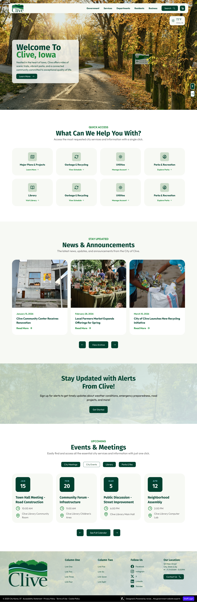
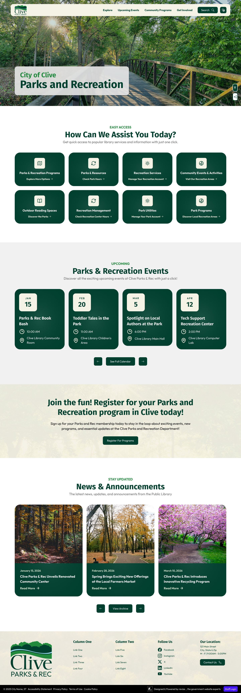
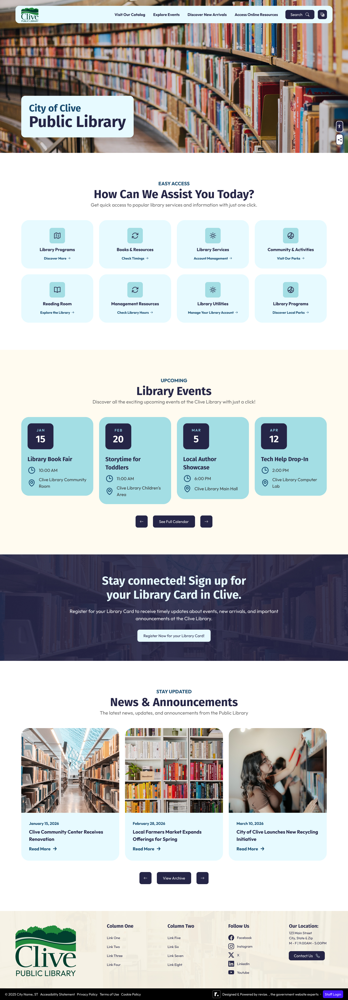
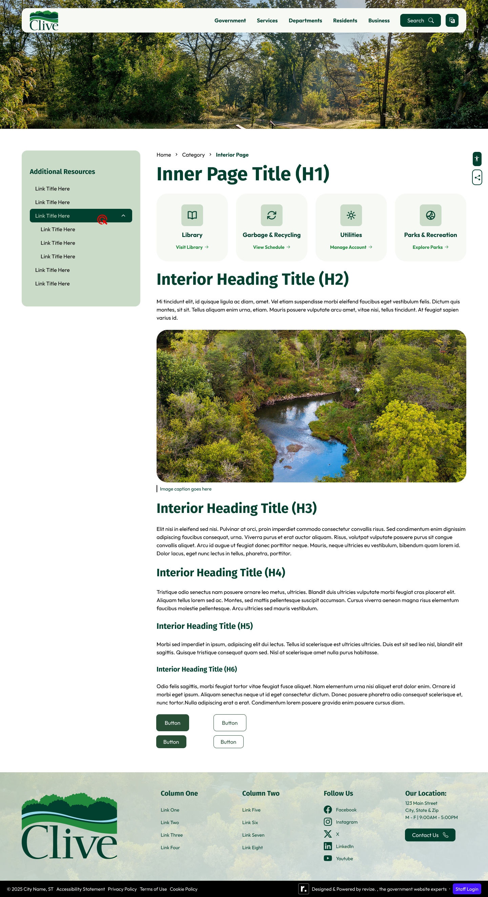

Case Study 04
City of Clive, Iowa
Multi-site redesign for a city whose identity is literally nature — three distinct but cohesive sites for City Hall, the Public Library, and Parks & Recreation, all built around the Greenbelt trail system that defines Clive.
Overview
"Distinct by Nature" — and they mean it
Clive, Iowa is known for its Greenbelt — a trail system woven through residential neighborhoods that connects parks, open spaces, and community gathering points across the city. Residents don't just use the trails. They define themselves by them. "Distinct by Nature" isn't marketing language; it's accurate.
The website redesign needed to carry that identity across three separate but coordinated sites: the main city site, a public library sub-site, and a Parks & Recreation sub-site. Each needed its own branded header and distinct feel, while still being recognizably part of the same city.
Challenge
One brand system, three distinct experiences
Designing a single site is one challenge. Designing three that share a visual DNA without feeling identical is another. The city site needed to feel authoritative and comprehensive. The library needed a community-focused, welcoming warmth. Parks & Rec needed energy and activity. All three needed to work within the same dark green palette without becoming monotonous.
The solution was individual header branding — each sub-site gets its own logo variant and department identity at the top level, with shared colors, type, and component patterns beneath. Same system, different personality.
Process
Discovery through three-site delivery
Design Decisions
Dark green as the anchor
The client was clear from the start: dark green. Clive is known for its trails and natural spaces, and the color needed to reflect that. PMS 350 — a deep, rich forest green — became the primary color for navigation, headings, and borders across all three sites.
Design Screens / Revision 3 / Desktop 1440px / Three Sub-Sites




Accessibility
Dark green done right
Dark backgrounds with white text can fail accessibility audits when the green isn't dark enough — or when the blue accents are used as text colors. Every color combination across all three sites was verified at 4.5:1 minimum contrast before any client delivery.
PMS 350 verification
Deep forest green verified for white text at 4.5:1 minimum contrast. The client's preference for dark green backgrounds with white text — Pete specifically cited better contrast — was both aesthetically and technically correct.
Blue accent use
PMS 636 sky blue used for backgrounds only — never as text color without sufficient contrast treatment. Prevents the common mistake of using brand colors without verifying they work for typography.
Touch targets
Card quick links and mega menu items sized for mobile thumbs — the client specifically cited making the mobile navigation easy to tap. 44x44px minimum enforced across all interactive elements.
ADA module placement
Positioned to avoid conflict with the City Bot chatbot and emergency alert banner on mobile — a three-way conflict that required careful z-index and position planning across device widths.
Outcome
Three sites, one system, 3 revision cycles
Nine complete design exports across three sub-sites — city, library, and parks — all sharing a visual DNA while maintaining distinct identity. Three revision cycles refined the layouts based on consolidated stakeholder feedback from Communications lead Molly Elder and city staff.